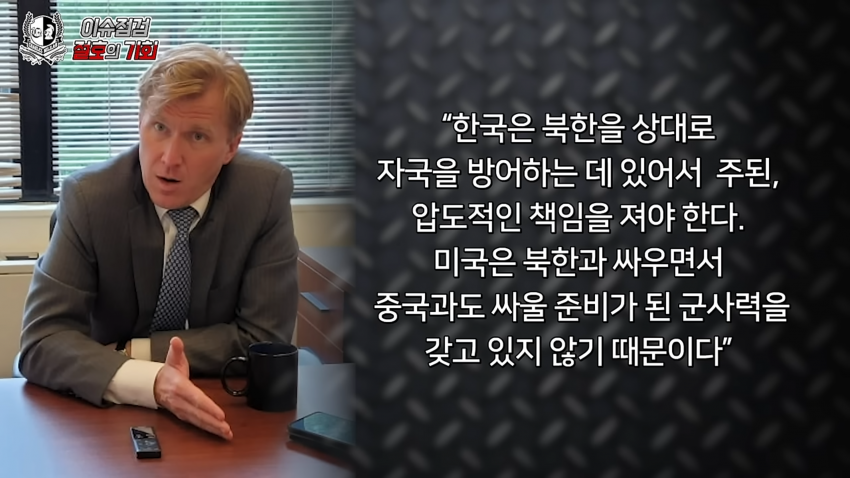
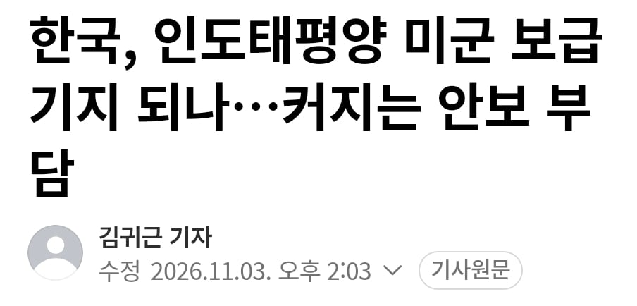
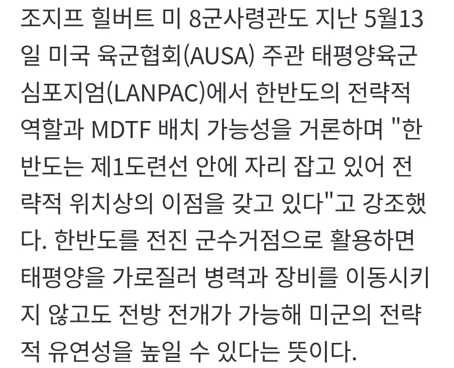
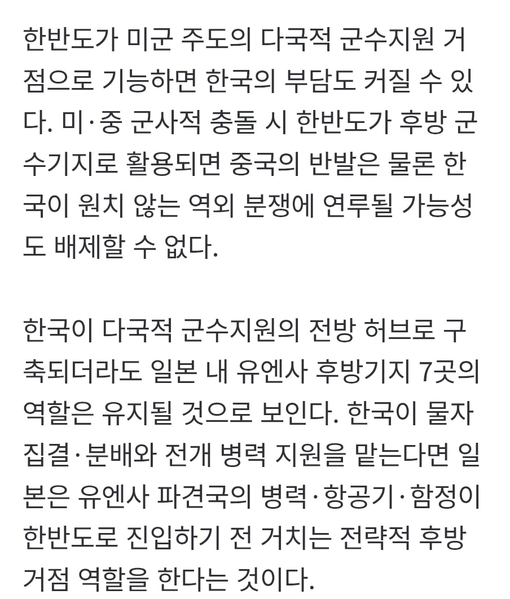

과거 - 우선 한국은 북한만 억제해줘



최근 - 한국은 최전선 기지 역할도 해라

과거 - 우선 한국은 북한만 억제해줘



최근 - 한국은 최전선 기지 역할도 해라
깨달으셨으니 다행임 이제 좆잡고 반성하시기만 하면 됩니다
원래는 일본이 하던 역할인가?
뭐래 그럼 핵 만들게 해줘
https://www.dogdrip.net/politics
여기 가서 얘기하면 더 재밌을거야 가서 놀아
걍 이제 한국이 만만한거임
2천년대는 안그랫는데
걍 k마가들 많으니깐 호구 같은거임ㅋㅋ
그때처럼 반미 시위힌번 해야
어 한국 중국 편붙을수 잇겟노?
이생각 들어야 잘대해줌
ㄹㅇ 그때는 미국이 가장 상대하기 힘든 국가랫는데
이제는 그냥 호구 인증 국가됨
뭔 씹포티새끼들이나 할법한 소리를 하고있냐ㅋㅋㅋ
진짜 2000년대 반미세대 아니랄까봐 헛소리도 진지하게 하고있네
그냥 초기와 달리 한반도의 지정학적 가치의 전략적 판단이 달라진것뿐인데
국제질서와 한반도 정세와 한국의 변화에 따라 일어난 일인데
이걸 어떻게 대응할지 분석을 해야지
그저 감정적으로 'K마가들 어쩌고~ 우리가 만만한갑보네~ 호구가 아닌걸 보여줘야해~ 반미하자~~'
이게 상식적으로 말이 되는 소리냐?
미국이 우리에 대한 전략적 가치가 달라졌다면 우리 역시 그에 대한 지분을 요구하거나 아니면 다른 방식으로 저 문제를 해결할 노력을 해야지
기껏 한다는게 반미몰이냐?
꼬우면 미국 조까하고 중국에 먹히면 된다 틀딱아
모든 미국인이 저렇게 생각하는 건 아니지만... 한명이 저렇게 생각하고 있으니 문제가 되지
동맹국들을 병신으로 보고 관세!관세! 지랄하는 그 새끼 말야
지랄 노노해라 병신아. 아직도 촛불시위 때 추억에 젖어사냐?
진짜 저런애들 보면 사고방식이 경의로울 정도임
그냥 단순하게 선악논리로 뭉뚱그리면서 사는데 진짜 세상 존나 편하게삼ㅋㅋ
좆불시위나 하러가쇼
아 이런새끼들때문에 중국새끼들이 개지랄 떠는거구나
반미시위따위 미국이 신경이나 쓸까
ㅈㄹㅋㅋ
근 몇년간 양안전쟁 위협이 현실화로 다기오기 시작했을때 전문가들 예측이랑 각종 시나리오 돌았는데
단순 기조가 바뀐거라기보단 현실적으로 가는거임
엘브리지 콜비가 저 발언 할때가
양안전쟁 대응에 대해서 대선 토론에도 거론되는
뜨거운 감자라 저런 반응 나오는게 이상하지 않지
그 상황에서 대놓고 국방차관이 미군 뺄거다 같은 소릴 하겠냐고 ㅋㅋ 중립국 어쩌고 하는 소리는 ㅈㄴ 멍청한거니까 가볍게 걸러야함
그냥 대충 땡큐 쉐쉐 아리가또 해라
미국 똥꼬만 빤다고 나아지는 것도 없고
중국 ㅈ꼭지 안빤다고 나아지는 것도 없다
걍 둘다 빨아야대
그러기엔 지금 미국이 최종적으로 양자택일하라는 상황 아님?
실제로도 미중이 몇년전부터 경제전쟁을 하면서 싸워오고 있었고 이제는 어떤식이든 물리적인 전쟁까지 일어나도 이상하지 않을 상황까지 오게된거라
미국은 계속해서 한국한테 조만간 진짜 중국과의 막고라가 일어날수도 있는데 이제 슬슬 너의 역할을 결정하고 준비해라 하는거잖음
줄타기도 본격적으로 시행된게 서브프라임 모기지로 미국이 일순간 흔들리니까 한국은 중국줄 잡으면서 버텨내며 미중 줄다리기를 해왔던거고
모기지 회복되고 사드이후로는 줄다리기 박쥐외교는 거진 끝났다고 생각함
이미 사드에서 한국은 미국을 선택한거나 다름없는지라 한국의 숙제는 언제든지 중국을 손절할수있게 점유율을 줄이고 미국에게 그에 상응하는 지분을 약속받느냐라고 봄
한한령때도 미국이 무시했는데
그에 상응하는게 있으려나?
한한령때 니들 알아 하세요 하던게 미국인데 뭔
그럴거면 핵잠, 핵미사일등 비대칭 전력도 줘야겠지
핵보유만 도와줘. 다 해줄게
핵보유를 이스라엘처럼 뒷구녕으로라도 승인해주면 무엇인들 못하리오
핵을 보유하지 못하게 하며
ㅇㅋ 받고 핵개발 ㄱ
그러면 돈과 기술을 주시오
반도체 팔아서 돈 존나 빨아가니까 아니꼬워서 그런거
아 그렇게 편협하게 사시는구나.
님최고!